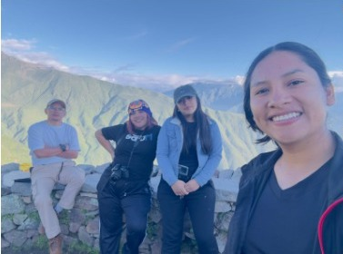
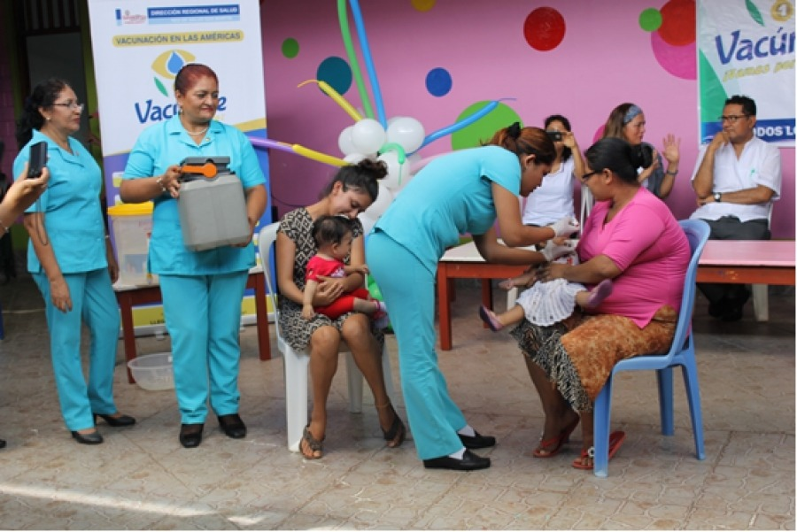
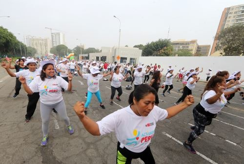
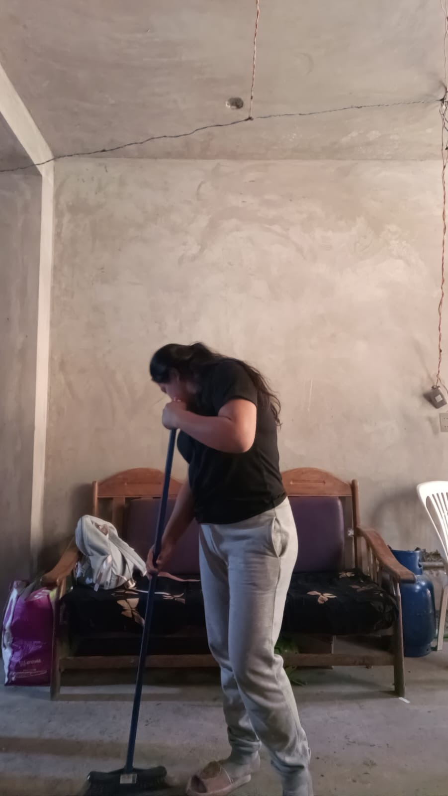
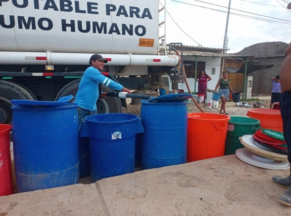
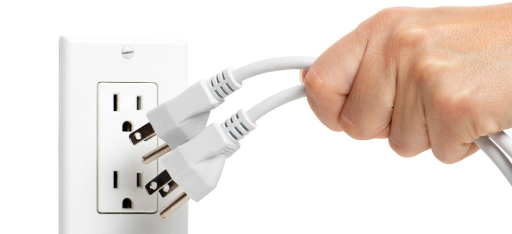
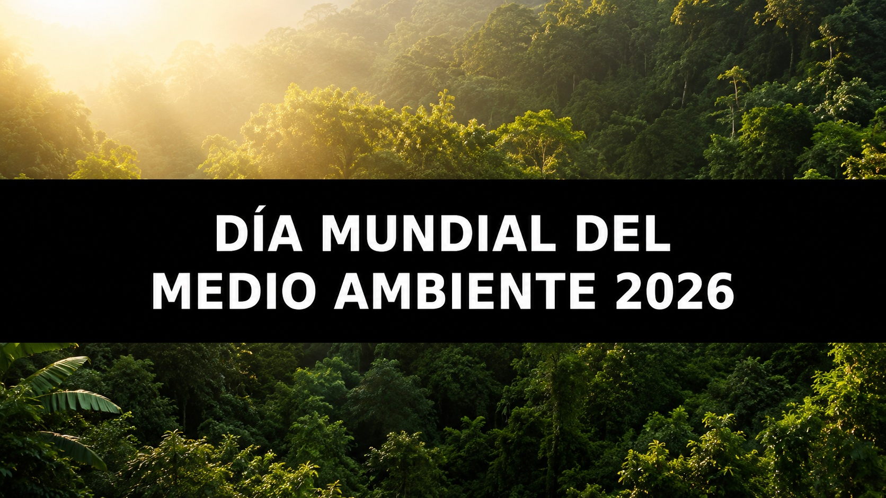
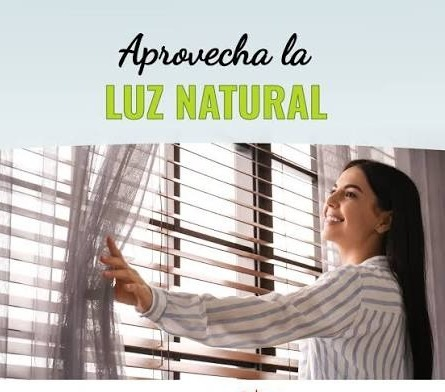

Acciones Sostenibles Ejecutadas
Despliegue fotográfico por ejes de impacto
ODS 3: Salud y Bienestar

Convivencia Familiar y Bienestar
Participación en actividades familiares que fomenten la convivencia, disfrutando del aire libre y el contacto con la naturaleza.

Prevención Inmunológica
Prevención de enfermedades mediante la vacunación de las familias y controles de salud regulares.

Promoción de la Salud Integral
Organización de campañas sobre alimentos balanceados, actividad física y salud mental en entornos comunitarios.
ODS 6: Agua Limpia y Saneamiento

Limpieza y Orden del Hogar
Limpiar y ordenar nuestro espacio personal de manera diaria, protegiendo la salud familiar.
Riego Nocturno Eficiente
Riego de las coberturas vegetales en horario nocturno para optimizar el uso del agua y favorecer la absorción de las plantas.

Almacenamiento de Agua Potable
Concientización sobre el uso adecuado del agua y el correcto almacenamiento de esta, con seguros o tapas.
ODS 7: Energía Asequible y No Contaminante

Cero Consumo Vampiro
Desconexión estricta de todos los cargadores de smartphones y electrodomésticos inactivos para recortar pérdidas energéticas.

Reutilización de Contenedores
Aprovechamiento de baldes y envases plásticos en desuso para la clasificación selectiva de residuos sólidos domésticos.

Eficiencia Lumínica
Organización del cronograma de estudios universitarios priorizando las horas de luz solar para reducir la facturación eléctrica.